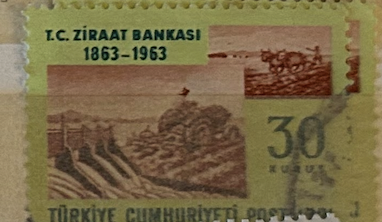
| SOURCE | TITLE| IMAGE MATCH | click to source page |
| MA-Shops | Türkei Türkiye 1 Lira 2005-2010 8. Emisyon 1. Tertip Yeni Bir Türk Lirasi unc | MA-Shops | 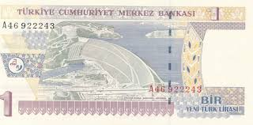 |
| eBay | Turkey … P-209 … 1'000.000 Liras … L.1970(1995) … Choice *UNC* … Prefix “M10”. | eBay | 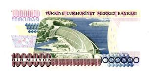 |
| Delcampe | Turkey - Turkey - 1 New Lira - 2005 - Unc. - Pick 216 - Serie A47 - President Kemal Atatürk | 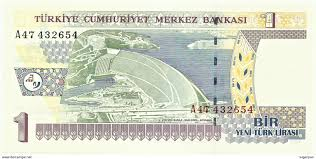 |
| Numista | 1 New Lira - Turkey – Numista | 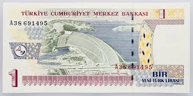 |
| Osmanlı Mezat | Piyango Bileti-31 Aralık 1947 Çeyrek D | Osmanlı Mezat | 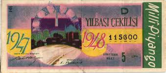 |
| Dreamstime.com | Isolated Turkish stamp editorial stock image. Image of letter - 390884784 | 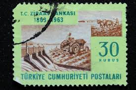 |
| eBay | TURKEY 8.EMISION 1 YTL PREFIX ----- A 53 ---- 2005 UNC | eBay | 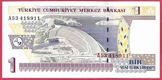 |
| eBay | UNC] L.1930 1953 Turkey 10 Lira P-160a Z43-104696 [003-3] | eBay | 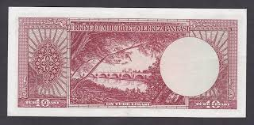 |
| Osmanlı Mezat | Piyango Bileti-7 Haziran 1950 Y Yarım | Osmanlı Mezat | 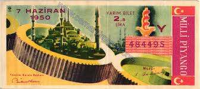 |
| Sahibinden | Republic Period / Koleksiyonluk Kağıt Para on sahibinden.com - 1292063443 | 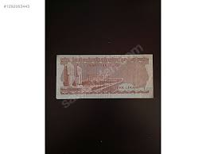 |
| PICRYL | US-BEP-República de Cuba (color certified proof) five silver pesos, 1930s (CUB-70-reverse) - PICRYL - Public Domain Media Search Engine Public Domain Search | 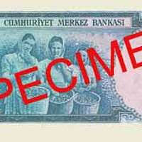 |
| NotesHOBBY | Turkey Set 4 PCS 5 10 20 50 Lira 1970 P 185 186 187 188 UNC – NotesHOBBY | 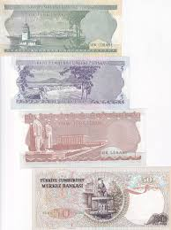 |
| eBay | Türkiye, 1.000.000 Lira, UNC, 1996, p209b | eBay | 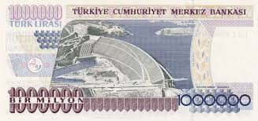 |
| Bid Inside Auctions | TURKEY - Green Apple Paper Money Auctions | 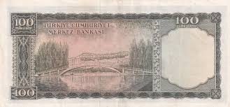 |
| Cumhuriyet Paraları | Giesecke + Devrient arşivleri - Turkish Republican Money | 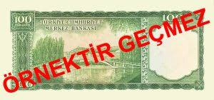 |
| Shutterstock | 5+ Hundred Türk Liras Royalty-Free Images, Stock Photos & Pictures | Shutterstock | 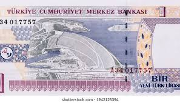 |
| Greysheet | Türkiye Cümhuriyet Merkez Bankası 100 Türk lirası B252as,P168as Diagonal red GEÇMEZ ovpt; horizontal CANCELLED perf Pricing Guide | The Greysheet | 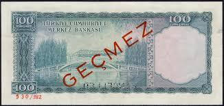 |
| Numista | 1 Lira - Turkey – Numista | 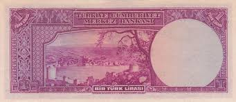 |
| eBay | 1976 Turkish Paper Money for sale | eBay | 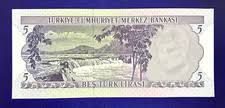 |
| Mercari | 1970s 20 Turkish Lira (2) bills Rare | Mercari | 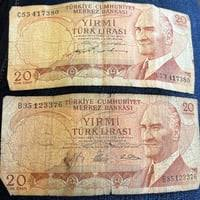 |
| eBay | TURKEY - 1 NEW LIRA 2005 UNC P 216a | eBay | 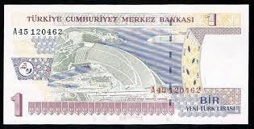 |
| ETHİOPİA 1 DOLARS WERY RARE 1945/1956 UNC CİL | 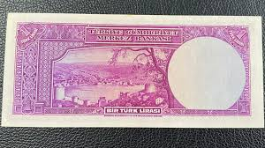 | |
| eBay | Turkey 2 1/2 Lira 1930 (1947) President ISMET INONU Rare!!! | eBay | 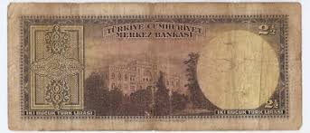 |
| Numista | 100 Lira (Brown reverse) - Turkey – Numista | 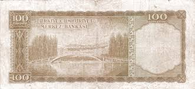 |
| eBay | 1968) Türkiye 5 Lirası P179 C70-213421. | eBay | 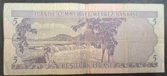 |
| eBay | 249705] Turkey, 1,000,000 Lira, AU | eBay | 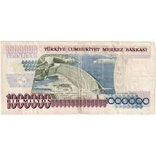 |
| eBay | 1970 Turkiye Cumhuriyet Meekest Bankasi Cerculated 5 Bes Lirasi | eBay | 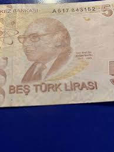 |
| eBay | 10 Lira 1952 Turkey VF #N28 79377 | eBay | 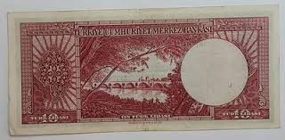 |
| eBay | Turkey 100 Lira 1956, VF-, P-168a, Prefix I14, Rare Type, With a Tear | eBay | 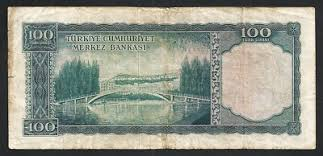 |
| eBay | Turkey 5 Lira 1930 (8.1.1968) President K. Atatürk | eBay | 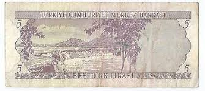 |
| eBay | Turkey, 10 Lira, 1953, FINE, p157, 5.Emission | eBay | 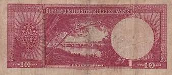 |
| Foreign Currency and Coin Exchange | Turkish Lira - Foreign Currency | 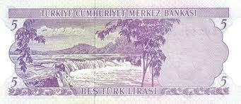 |
| eBay | TURKEY 5 Lira ----- PREFIX Z92 -----1976 REPLACEMENT UNC (TK 11 669) | eBay | 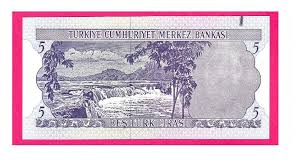 |
| eBay | Turkey 5 Lira 1970 (1976) UNC, BUNDLE, Pack of 100 PCS, P-185, Prefix K | eBay | 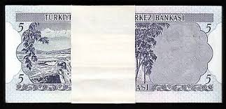 |
| | Katz Auction | Turkey 50 Lirasi 1951 (ND) | Katz Auction | 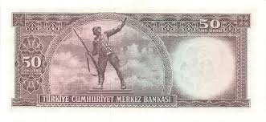 |
| Numista | 100 Lira (Series II; with "SERİ"; Blue reverse) - Turkey – Numista | 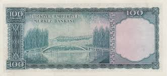 |
| eBay | TURKEY 5 Lira ----- PREFIX L01 -----1976 UNC (TK 11 684) | eBay | 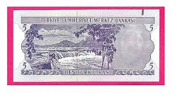 |
| eBay | Turkey 5. Emission RARE 2½-5-10-50-100-100-500-500-1.000 Lira 1951 UNC "COPY" | eBay | 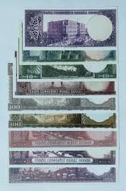 |
| eBay | 🔴TURKEY 5 Lira 1970 UNC Beş Türk Lirasi, Kemal Ataturk Serial No. K53 218271 | eBay | 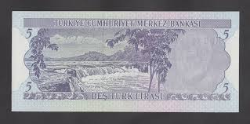 |
| eBay | Turkey 1 Lira 1930(1942) p135 Series B'12 Rare Uncirculated CU choice crisp | eBay | 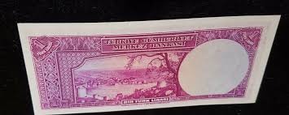 |
| eBay | Turkey Scott #1222-24 VF MNH 1956 Excavations at Troy | eBay | 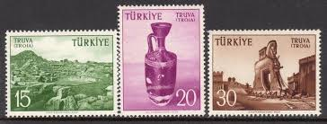 |
| eBay | Turkey 5 Turk Lirasi 1970 Un-circulated | eBay | 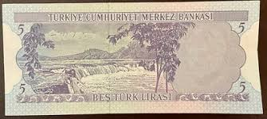 |
| eBay | Turkey Million Lira Banknote Turkish Currency Mustafa Kemal Ataturk Memorabilia | eBay | 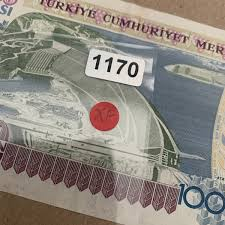 |
| eBay | TURKEY P.160-8642 10 LIRTA SERIE M2 SEE SCAN WE COMBINE 2504 | eBay | 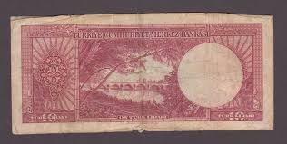 |
| eBay | TURKEY 8.EMISION 1 YTL PREFIX ----- A 03 ---- 2005 UNC | eBay | 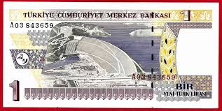 |
| Wikipedia | File:5-II Old TL reverse.jpg - Wikipedia | 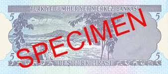 |
| eBay | TURKEY 2 1/2 LIRA 1930 (1942 - 1947 ) XF P-140 CANCELLED ISMET INONU | eBay | 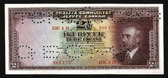 |
| eBay | WORLD CURRENCY: 1966/1968 - 3 DIFF. TURKEY 5/10/20 LIRA P # 117, 118, 119 CU | eBay | 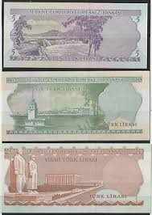 |
| eBay | Turkey, 2 1/2 Lira, 1960, AUNC, p153a | eBay | 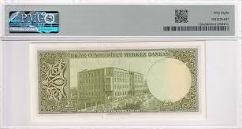 |
| eBay | TURKEY 10 TURK LIRASI L 1930 SERI T21 P 157 XF++/AUNC free shipping from 100$ | eBay | |
| eBay | Turkey 100 Lira 1984 , UNC , 5 PCS Consecutive LOT, P-194 , Prefix F | eBay | |
| eBay | 1292466] Turkey, 5 Lira, VF | eBay | |
| notafilia-kp.com | 10 lira, 1961 | notafilia-kp.com | 82500 | paper money | |
| TCMB | TCMB - E 5 - ONE HUNDRED TURKISH LIRA III. SERIES | |
| eBay | Turkey 10 Lira 1930 (P-159a) VF with Lucky Numbers Z91-126587 + Gift! TU1 | eBay | |
| eBay | Turkey 1930(1964), 100 Lira, P177a, PMG 58 AUNC | eBay | |
| eBay | TURKEY # 1-2096 # 20.000 LIRASI BANKNOTE # USED # | eBay | |
| eBay | Turkey, 20 Lira, 1979, UNC, p187a, 6.Emission | eBay | |
| eBay | TURKEY 5. EMISION 3. ISSUE 50 TL O8 1930-1953 NATURAL XF (TK 10 967) | eBay |
{kind=link}